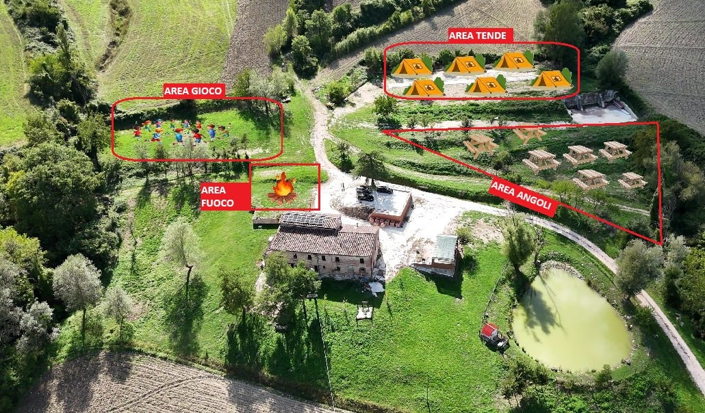

LA MAPPA DELLE AREE
Non una foto qualunque.
È una piccola mappa.
Questa immagine mette in evidenza le diverse zone del terreno. Un colpo d’occhio per orientarsi e immaginare il proprio tempo qui.
- Area tende
- Area angoli
- Area gioco
- Area fuoco